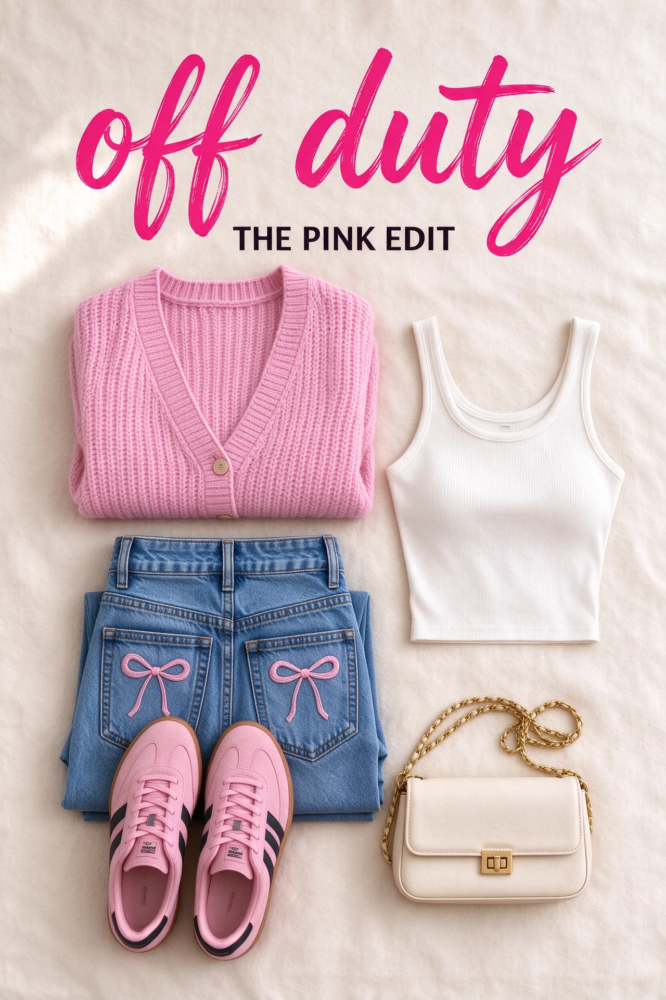
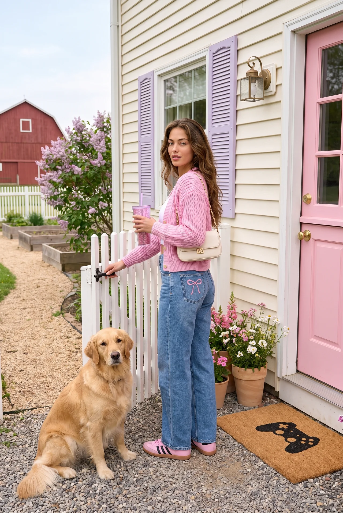

This is the recovered specification and source pack. V8 is not cleared to run. No new images were generated.
Attach this whole ZIP to the receiving coding chat and paste the repair prompt below. All local links work after extraction.
Governing specification · Verbatim instructions · 66 source-backed requirements · Handoff / coverage limits


The photos are preserved unchanged. This approves one mock look; it is not retail-fidelity or client-release certification. Bedding is not a universal series template.
Repair the Legally Blonde Halloween Sprint — Packet 1 using this attached recovery bundle and the TDIE repository. This is prompt-packet repair work only. Do the work; do not ask Jodie to restate the specifications, decide every prop, edit your handoff or pay to test another unverified prompt set. FIRST READ AND INSPECT THE SOURCES Read GOVERNING-SPEC.md, REQUIREMENTS-LEDGER.json, USER-INSTRUCTION-ARCHIVE.json and APPROVAL-EVIDENCE.json in full, using chunks that do not truncate. Inspect the thirteen original clothing-reference screenshots and the approved cardigan BASIC/STYLED/LIFESTYLE photographs. Read historical-prompts and approval/acceptance records. Direct user instructions with their latest category-specific corrections govern; assistant-generated summaries and rejected V1–V8 packets do not establish approval. The recovery states exactly what history was available and what was not. Do not claim to have read unavailable prior history. Repo source: ops/wys-memory/2026-10-07-recovered-spec/. The original sprint is ops/private/wys-board-test-2026-10-06/halloween-sprint-restart-20261007/. Bundle folders include a current-source copy of the V8 packet with product records, product reference files, identity, URLs, affiliate links and Idea Lists, plus historical V1–V6 text/JSON records. V8 is explicitly incomplete/rejected as a repair authority. Use its inventory evidence, not its bad image-role instructions. All files needed for the visual source chain must be supplied locally; no missing private cloud folder excuse when the bundle contains them. PRESERVE THE CLOTHING ROLES BASIC: aesthetic photographed outfit flatlay, only selected shopping products. Unfilled naturally flat or folded clothing; believable cut, scale, material and quantities. Personalize through selection, simple appropriate surface, composition, light and prominent readable label. Do not add a pen, flowers, jewelry, phone, watch or other extra unless it is a selected shopping item. Do not force every look into the approved cardigan grid. Preserve every item's identifying detail. STYLED: a DIFFERENT person-free outfit flatlay with clothing visibly filled out AS IF WORN. Concealed support creates rounded bodice/shoulders, tubular sleeves, deep empty cuffs/neckline and appropriate waist/hip fullness. Horizontal garments have natural compression and contact shadows. No body, skin, mannequin, visible stuffing, floating/inflated fabric or altered seams. An open jacket over a tee without volume is still BASIC. Extras or changed backdrop alone cannot pass differentiation. Keep rear-detail denim realistically folded rear-up when needed; never put back pockets or embroidery on a front fly. STYLED also has a fuller coordinated client-specific getting-ready accessory story and signature background. Tommy Kate is girly/maximalist, not generic phone/watch/sunglasses-only or random hobby gear. Phone/watch belong in STYLED when relevant. Pearls, jewelry, a fine-glitter clip, gloss, heart compact, keys and meaningful charm are examples to reason from, NOT a permanent exhaustive list. No gaming headset in everyday fashion. Do not add unsupported linked products or duplicate cosmetics. Existing per-look exclusions (such as no extra pearl necklace in the suit) are not global jewelry bans. No outfit flatlays on office desks/worktables. No hanging wardrobe display in place of flatlay. Do not repeat the same child-looking bed, pillow/gingham or garment arrangement across the series. The approved cardigan bedding is a one-look example, not a universal template. Choose adult, coherent getting-dressed surfaces and styling per look; preserve garment volume even while varying scenery. LIFESTYLE: exact approved avatar naturally wearing the selected outfit during a meaningful activity. Identity from avatar reference only; retail models and benchmark outfit cannot determine identity. Specific plausible environment/action aligned with her niche and occasion. Materially change POV/camera position/framing/action; do not paste her into the STYLED frame. Keep clothing and shoes readable, physical contact/anatomy and fit plausible. Do not invent generic corporate luxury to replace her personal aesthetic. NON-FASHION IS DIFFERENT Only for objects/decor/car/etc: contextual editorial BASIC, person-free in-use STYLED, avatar-in-action LIFESTYLE. Do not apply this object installation/in-situ formula to clothing. Holiday/gift labels inherit the actual product category. New client categories require category-specific composition plus that client's profile, not Tommy Kate defaults everywhere. PERSONALIZATION AND EXCLUSIONS Tommy Kate: girly, playful maximalist; hot-pink pops with cream relief and lavender contrast; realistic physical glitter, not whole-image sparkle. No pastel pink-on-pink wash; actual product colors remain fixed. Lilacs/wildflowers only; no hydrangeas. No added decorative bows/ribbons, furry rugs, shag/sheepskin/fluffy backgrounds. The expressly selected jeans' existing rear embroidery and the tolerated bow-earring flaw in the historical approved mock are narrowly scoped exceptions, not blanket permission. Flowers need stems in water on real furniture or roots in soil. No indoor staging table in a lawn or irrelevant stationery in an outfit scene. Use farmhouse world details when the action belongs there: plausible architecture, pink door/lavender shutters, garden planting, useful doormat, dog and held tumbler where relevant. Do not repeat the same porch pose. New architectural details are scene interpretation, not verified actual-house likeness. Golden retriever's name remains undecided. Workspace-only signature pink desk and readable Player Two? pink mug belong in workspace concepts, not automatically every outfit/coffee scene. Never call required mug lettering tiny/small. LABELS, REFERENCES AND PROMPT LENGTH At least one flatlay carries the finished readable label. Current manual BASIC treatment: thick hot-pink brush-script title with crisp black uppercase subtitle above products, no obstruction. STYLED/LIFESTYLE remain photo-led/unlabelled in the approved clothing trio. Keep each look's exact selected label words documented; improve AI-sounding copy thoughtfully without silently removing labels. The historic off duty / THE PINK EDIT applies to the approved cardigan, not every sprint outfit. Each complete IMAGE prompt must be under 3,000 characters (maximum 2,999 after actual assembly). Measure saved text including spaces/newlines. No hidden appended instructions. Portrait 2:3 for the trio unless a specific later approved format exists. Supply actual downloadable attachment files, a numbered attachment list and an item extraction/ignore mapping per prompt. Avatar first for lifestyle; role-matched aesthetic benchmark and relevant selected product photos clearly identified. Product references control product facts only; original vibe images control style only. Do not include an unrelated tote, pearls, shoes, garment or person from a reference. Each benchmark's known defects must be explicitly excluded. A renderable combined reference board is an optional separate helper, never a replacement for individual photos or permission to copy grid composition. Do not alter source images. SOURCE AND RECONCILE THE COMPLETE PACKET Preserve original filenames/source hashes, live slugs, Idea Lists, product URLs, existing affiliate URLs and dated sourcing evidence. Do not silently erase links or swap products to simplify prompts. Verify missing/mismatched variant and link records using an appropriate authorized low-cost/read-only route if current claims or changes depend on them. Select cohesive good-looking pieces with substantive review/quality/value evidence; not cheapest-only, expensive-only or merely pink. Existing dated review data is not today's stock/review proof. Mark unresolved records honestly. Do not impose a made-up review threshold or fill a list with poor pieces to hit a count. V8 currently contains nine active looks numbered 1,2,3,5,6,7,8,9,10; original number 4 was merged into 1 in a prior assistant record. Preserve that history and explicitly reconcile intended count/coverage with source evidence; do not invent approval of the merge or silently omit another look. Several looks contain fewer shopping records than the historical 5–8 policy: inspect set/bundle counting and sourcing decisions, document whether that is deliberate, and do not manufacture filler. This handoff repairs Packet 1, not all 35 sprint looks without their source records. DELIVER THE REPAIR AND PROVE THE DOCUMENT CHECKS Create a new version; retain old failures as history. Deliver ONE accessible self-contained FULL-PACKET-1.html and ZIP with full per-look copy, three complete prompts, product/affiliate/Idea List links, actual photos, numbered attachment orders, counts, shopping-vs-extra inventories, scene/camera plans and known issues. Product links must appear in each relevant look, not only an obscure global manifest. Each photo link must open an included file. Provide a plain text copy-paste version too. Preserve Pinterest metadata and copy; write alt text from actual accepted photos, not imagined output. Save a requirement-to-prompt matrix covering clothing-role separation, shopping allowlist, garment volume, category/scene logic, individual personalization, exclusions, material/orientation, label words/readability, attachment mapping, lengths and series variety. Every relevant ledger rule must be represented or explicitly out of scope. Compare BASIC and STYLED with text/props mentally removed. Prompt text can pass static coverage, not visual QA. No image or client-release pass may be claimed without reviewing generated outputs. Approved cardigan direction does not prove exact retail matching or repeatability across clients/categories. Commit the repair, governing records and validation evidence on the task branch. Report branch, full SHA, folder and easy download links. Do not claim GitHub availability without verifying push/readback. Ensure AGENTS.md and WYS memory entrypoint link to the governing record so next sessions actually load it. Do not claim global ChatGPT memory was updated if no memory write capability exists. Do not generate images, use Higgsfield credits/browser-heavy paid tools, publish/deploy/schedule, message other chats or resume old automations for this prompt repair. Native ChatGPT generation is the preferred simpler test route if Jodie separately requests generation. Preserve her approved existing outputs; do not make her rerun them because references were lost. Continue the authorized repair rather than returning another plan, list of suggested changes or a request for her to restate the work.
Dated records from October 7. Availability/reviews/affiliate destinations were not refreshed in this source recovery. Idea List IDs are retained; the canonical source record controls any existing full URL.
Source inventory, NOT approved prompt direction. Historical Idea List
Source inventory, NOT approved prompt direction. Historical Idea List
Source inventory, NOT approved prompt direction. Historical Idea List
Source inventory, NOT approved prompt direction. Historical Idea List
Source inventory, NOT approved prompt direction. Idea List destination not present; preserve recorded ID without inventing a URL
Source inventory, NOT approved prompt direction. Idea List destination not present; preserve recorded ID without inventing a URL
Source inventory, NOT approved prompt direction. Idea List destination not present; preserve recorded ID without inventing a URL
Source inventory, NOT approved prompt direction. Idea List destination not present; preserve recorded ID without inventing a URL
Source inventory, NOT approved prompt direction. Idea List destination not present; preserve recorded ID without inventing a URL
V8 structured source inventory (NOT approved prompts) · Original filenames, hashes and dimensions · Historical final styled prompt · Historical final lifestyle prompt · Saved BASIC variant